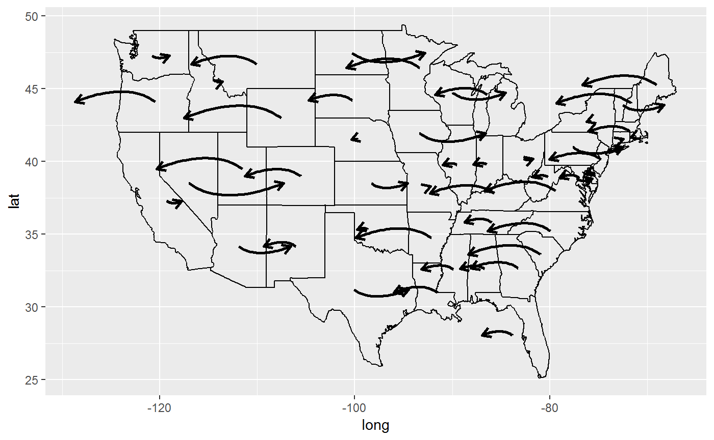

This package ggfun was created as an extension of ggplot2 to add some functions for some specific goals, such as replacing points with images, making it more convenient to deal with map in some cases, generating some curves with given parameters, etc. But it is really an excercise for applying ggplot2 extension functionalities and there is large space to improve.
Here is a link to our GitHub repository where the code for the package is stored.
Installation
The package can be downloaded from GitHub. You can use the following code to install.
You can then load the package in the normal way.
Functions
geom_image
This function is used to draw scatter plot as geom_point does, but replaced the points with a predefined image (Elephant and donkey).
The usage is the same as geom_image.
stat_star
This function applied the algorithm to calculate the distances between the central point (defined by median) and other points, and connect the central point to the farthest point with a line, which can be modified as a regular line object in ggplot2.
madedata <- data.frame(x = rnorm(100, mean = 0, sd = 1),
y = rnorm(100, mean = 0, sd = 1))
ggplot(madedata, aes(x = x, y = y)) +
geom_point() +
stat_star(color = "red")
stat_arrowmap
This function can draw arrow maps for the US. This function requres a specific type of data set, which generated as in the examples, with longutude, latitude and change which usually refers to the changes of party preference in US election for each state.
The required aesthetics are:
-
x: usually longitude -
y: usually latitude -
change: the changes for each state (can be specified by group aesthetics, as one state by default).
Other features can be modified similar to geom_curve.
usmap <- map_data("state")
madedata <- data.frame(region = unique(usmap$region),
change = (runif(49)-0.5)*2,stringsAsFactors = FALSE)
madedata <- madedata %>%
left_join(usmap,by = "region")madedata %>%
ggplot() +
geom_path(aes(x = long, y = lat, group = group)) +
stat_arrowmap(aes(x = long, y = lat, change = change, group = region),
curvature = 0.3, angle = 60,
size = 1,
arrow = arrow(type = "open",
length = unit(0.1, "inches")))
layer_PersHomo
The function provide a preview of persistant homology for geographic locations. It helps to investigate whether any clustering of the events respect to geographic location. To use the function, a data set with longitude and latitude of multiple geographic locations and a user-defined Geo distance parameter are required.
The required input:
-
data: The dataframe with longitude and latitude -
x: longitude -
y: latitude -
d: the magnitude of real Geo distance (in km) used as the criterion to link two locations
The following example shows the persistant homology of earthquake event around pacific plate.
library(magrittr)
worldmap <- map_data("world2")
p <- ggplot() +
geom_polygon(data=worldmap, aes(x=long, y=lat, group = group),fill="white", colour="#7f7f7f", size=0.5) +
theme(axis.line=element_blank(),
axis.text.x=element_blank(),
axis.text.y=element_blank(),
axis.ticks=element_blank(),
axis.title.x=element_blank(),
axis.title.y=element_blank(),
legend.position="none",
panel.background=element_blank(),
panel.border=element_blank(),
panel.grid.major=element_blank(),
panel.grid.minor=element_blank(),
plot.background=element_blank())
data(eqRaw)
eq <- eqRaw %>% filter(LONGITUDE > 110 | LONGITUDE < -45) %>%
mutate(LONGITUDE = ifelse(LONGITUDE < 0, LONGITUDE + 360, LONGITUDE)) %>%
select(YEAR, MONTH,DAY, EQ_MAG_MS, COUNTRY, LOCATION_NAME, LATITUDE, LONGITUDE)
## add layer_PersHomo
fp <- p + layer_PersHomo(data= eq, mapping = aes(x=LONGITUDE, y=LATITUDE), d=450000, colour = "blue"); fp
stat_ars
This function applied the algorithm to calculate the Archimedean spiral. Then we apply ggplot2 to connect each point to draw a spiral.

stat_rl
This function is used to draw regression line for the each level of the categorical variable.
ggplot(indexf, aes(x = length, y = width, id = sex)) +
geom_point() +
stat_rl(aes(x = length, y = width, id = sex, colour = sex))